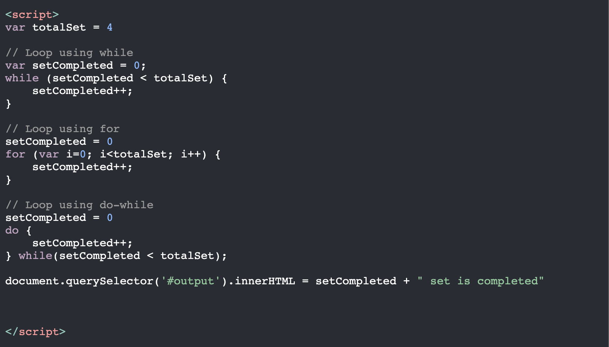
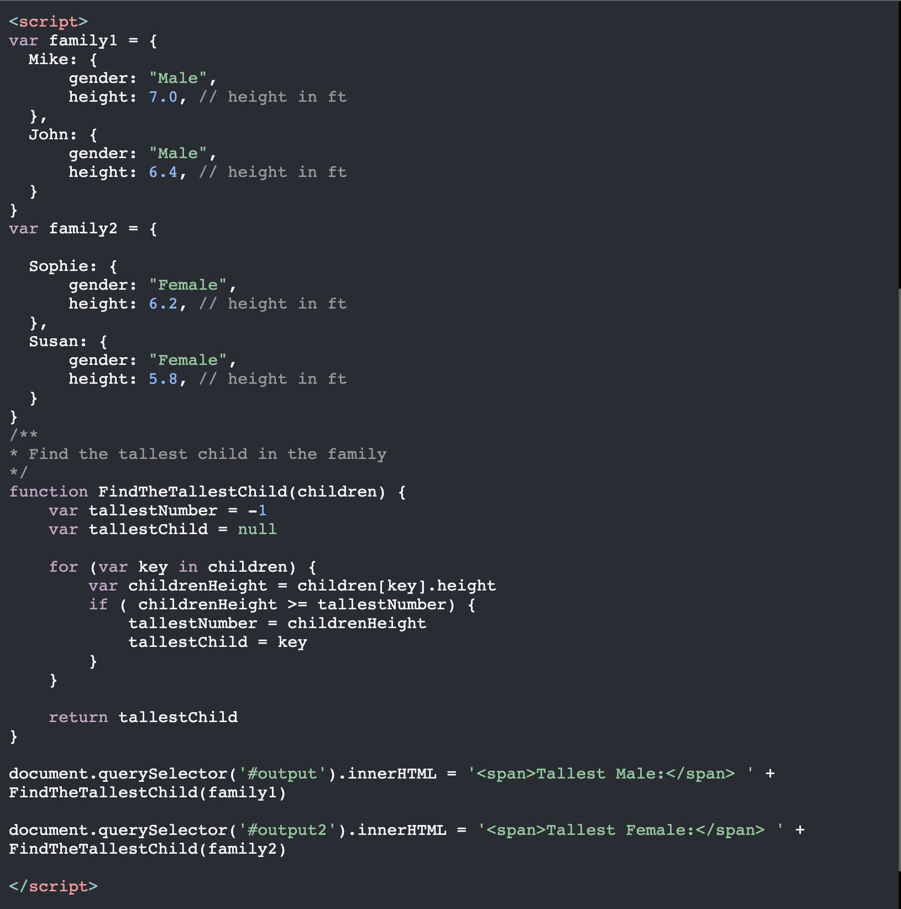

Javascript Fundamentals
HTML and CSS
A website is made up of HTML, CSS and Javascript, it build to serve a purpose such as for social interaction such as facebook. As mentioned earlier a website is made up of three things HTML, CSS and Javascript and each serve a purpose. HTML is main core component that made the website, CSS make the website look appearing which get visitors to like and visit the website and Javascript support the function of website so visitors can interact with website.
To fully understand HTML and CSS think about a messy room before and after as shown below. The top image shows a website without css and bottom image shows a website with css.

Real Example


Control Flow and Loops
Control flow is a flow of execution a computer instructions from top to bottom. Sometimes those instructions might not be executed depends on the conditions that may occur. To fully understand it properly, lets thing about a shopping list.
Shopping List
- Milk
- Corn beef
- Chocolate
- Coffee
- Bread
- Wine
- Toilet paper
- Water
From our shopping list above, the most and common way of doing a shopping is by going through a shopping list from top to bottom. Sometimes we might only get a few things because of the budget. Sometimes we might already have wine or bread so we dont have to get them. Sometimes the shop might not have the item we are looking for and etc.
Code Example: Control Flow
Playground: https://www.w3schools.com/code/tryit.asp?filename=GNTRT92AYZ1W


From looking at code above, the program run from top to bottom, initialize the budget, shopping list, store, calling the shoppinng function, shopping function is executed, result is returned, output the result to html, program stop.
Loops is set of instructions that are executed until a condition is met. Think of it as doing a workout in the gym, you follow your workout plan and you do it repeatively until you done a set. For example, bench press workout
Bench Press Instruction
- 3-4 sets
- 8-10 reps
Condition here is 3 or 4 sets
Instruction is doing 8-10 reps that is repeated until 4 sets is completed
Code Example: Loop with for, while and do-while
Playground: https://www.w3schools.com/code/tryit.asp?filename=GNTS6FNCPJOR

DOM
Stands for the Document Object Model and is a standard data model and programming interface that expose objects, properties, methods, and events in the HTML. Earlier in the HTML and CSS section, I introduced Javascript and its purpose. Javascript makes the web page functional, How? Through the DOM, without the DOM a website cannot be interactive and fulfill its purpose.
A lot of us have interacted with a website, for example, when we log in to Facebook. We fill up the login form and then we clicked the Login button. In the background, Javascript interacts with the DOM to access our username and password from the input fields then sends those credentials to the backend somewhere in the cloud, and then Javascript again interacts with the DOM to display the login failed message or take us to our home page.
Example in action with facebook.com

Left hand side is the actual facebook login page and on the right hand side is the devtool that have access to the DOM.

I wrote a code in the devtool that attach a click event listener to login button, to get both the username and password from two input fields and output the message to the console and to the user. The image below show all that but you can imagine that is how facebook web developers might do it but send those credentials to their server somewhere in the cloud.

Accessing data from Arrays and Objects
Data from arrays can be accessed using index whereas objects can be accessed using a property. Yeah that might be confusing but lets examine this example, imagine you have 4 children.
Let say we have Mike, John, Sophie and Susan, if we look at this based on an array perpective we can access Mike using his position as being the first child, John the second, Sophie the third and lastly Susan. Now, for an object perpective, we can get Mike and John by being males in the family, Sophie and Susan by being females in the family. To get Mike we can use his property as being the tallest of all the four children.
Code Example: Accessing data from Array
Playground: https://www.w3schools.com/code/tryit.asp?filename=GNTM4Z5RP4WH

Output

Code Example: Accessing data from Object
Playground: https://www.w3schools.com/code/tryit.asp?filename=GNTNULYAN60Q

Output

The key point here to take away is that data in the array can be accessed using index or position as shown in the example above, 'children[0]' whereas to access data in the object is by using a property thus 'children[key].height'
Functions
A function is a block of code that perform a particular task only when something invokes it. Its basically holds the logic of the program that can be executed multiple times. Functions are useful to serve one particular purpose, reusable, easy for testing and etc.
Code Example: Function
Playground: https://www.w3schools.com/code/tryit.asp?filename=GNTOLRS93K1J
Output